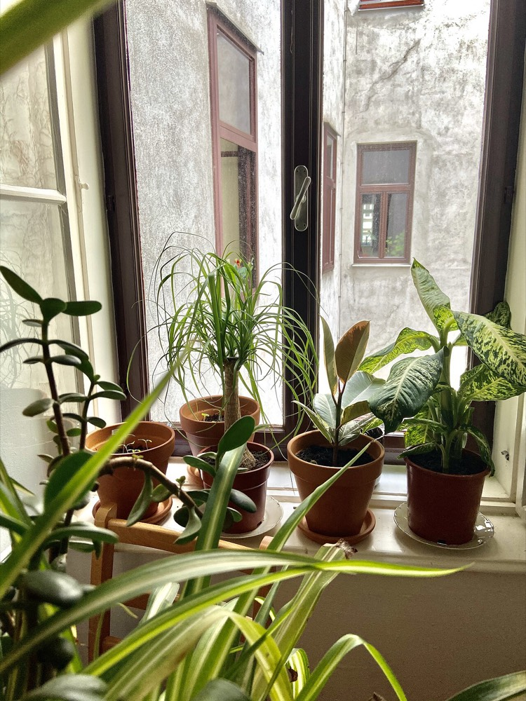
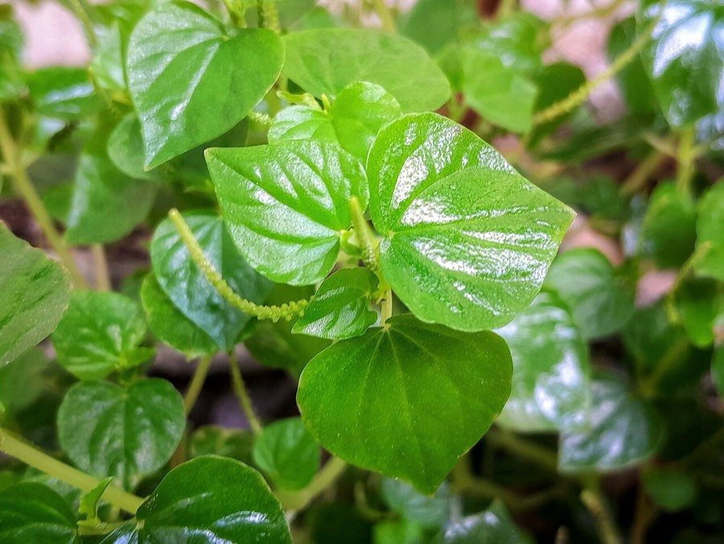
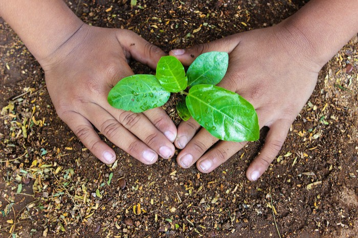

Plant a habit
Pick something small enough that a bad day cannot break it. Drinking water counts.
Every check-in feeds a plant. Miss a day and it wilts. Your garden is your streak, made visible.

No streak counters to stare at. Just a plant that looks different today than it did last week.
Pick something small enough that a bad day cannot break it. Drinking water counts.
One tap when you have done it. That is the whole interaction, and it takes a second.
Seedling, sprout, leafing, blooming, tree. Five stages you reach by turning up.

A checklist resets every morning and keeps none of the credit. A plant carries every day you showed up in its shape.
Skip a day and the plant droops. It does not die. You water it tomorrow and it comes back.
Seedling to tree, so the far end feels reachable.

Every plant here began as one small thing someone did today.
Six habits are already growing in the sample garden. Have a look at what a few weeks builds.
Open my garden